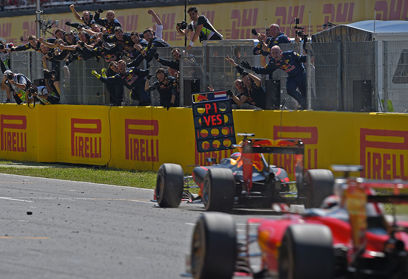

The Unprecedented Debut: Max Verstappen's Record-Shattering Arrival
In the world of Formula 1, a sport where experience is often deemed as
valuable as raw speed, the arrival of Max Verstappen in 2015 was nothing short of a seismic event.
When the
lights went out at the Australian Grand Prix, the season's opening race in Melbourne, history was
being made
on the starting grid. Nestled within his Scuderia Toro Rosso STR10 was a driver who was not yet
legally an
adult in many countries, a talent whose ascent to the pinnacle of motorsport was unprecedentedly
swift.
At the astonishingly young age of 17 years and 166 days, Max Verstappen officially began his first
Grand Prix, decisively shattering a record that had stood for over a decade. He surpassed the
previous mark held by Jaime Alguersuari by nearly two full years, a margin so significant it
redefined what was thought possible for a rookie driver. This was not the culmination of a long and
steady climb through various feeder series; Verstappen had made the audacious leap to Formula 1
after just a single season in the European Formula 3 Championship, bypassing the traditional GP2
Series route entirely.
His entry into the sport was met with a mixture of awe and apprehension. Critics questioned whether
a driver so young possessed the maturity and experience necessary to handle the immense power and
complexity of a Formula 1 car, particularly under the high-pressure conditions of a race weekend.
The debate was so profound that it prompted a significant reaction from the sport's governing body,
the FIA.
Concerned about the potential risks of such a young driver entering the sport, the FIA swiftly moved
to revise the regulations for obtaining a Super Licence—the mandatory qualification required to
compete in Formula 1. They introduced a minimum age requirement of 18 and a points-based system
dependent on success in junior categories. This change effectively ensured that Verstappen's record
would be etched into the history books permanently, an achievement unlikely to ever be broken.
Although his debut race was ultimately cut short by an engine failure, Verstappen had already made
his point. He had qualified admirably and raced with a confidence that belied his years, proving he
belonged on the grandest stage. His record as the youngest driver to ever start a Formula 1 World
Championship race remains a testament to his prodigious talent and marks the spectacular beginning
of a career that would ascend to even greater heights.
Spain 2016: The Day a Boy Was Crowned
Following his historic debut, the question was not if Max Verstappen would win, but
when. That answer arrived with breathtaking speed just over a year later, at the 2016 Spanish Grand Prix, in
what remains one of the most stunning team debuts in Formula 1 history. Freshly promoted to the senior Red
Bull Racing team, the young Dutchman stepped into a top-tier car for the very first time.
The race began with high drama as the dominant Mercedes drivers collided and retired on the opening lap,
throwing the Grand Prix wide open. Seizing the opportunity with the composure of a seasoned veteran,
Verstappen executed a flawless strategy under immense pressure from Ferrari's Kimi Räikkönen.
He masterfully managed his tyres, defending his position for lap after relentless lap. When he crossed the
finish line, he had done more than just win a race; he had obliterated another record. At just 18 years and
228 days old, he became the youngest Grand Prix winner in Formula 1 history, a record previously held by
Sebastian Vettel. This incredible victory was no fluke; it was a clear declaration that the sport's most
electrifying young talent had truly arrived and was destined for world championships.